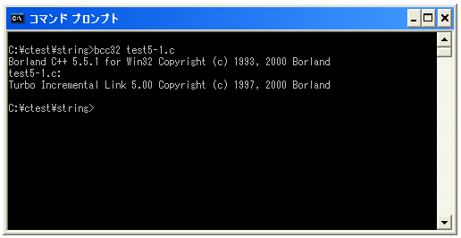
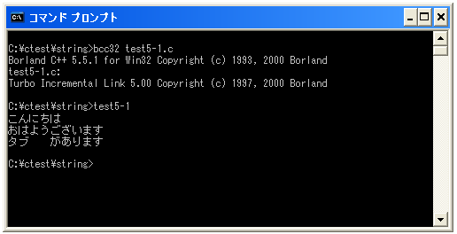
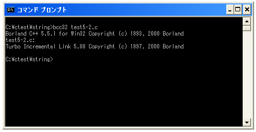
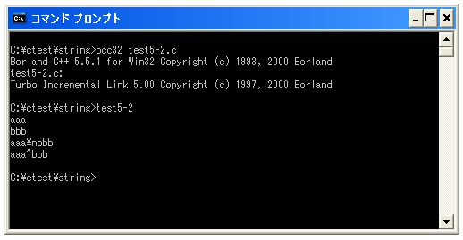

特殊文字(エスケープシーケンス)
文字や数値の使い方を簡単に見てきましたが、テキストとして入力を行えない特殊な文字があります。簡単な例で言えば改行です。テキストエディタ上でEnterキーを押してもテキストが改行されるだけで改行を表す文字としては入力ができません。
このような特殊な文字を入力するために「¥」記号＋1文字を使い別の単語として記述することができます。このような特殊な記述の仕方をエスケープシーケンスと言います。
よく利用されるものでは次のようなものがあります。
¥a 警報音
¥b バックスペース
¥n 復帰改行
¥r 復帰
¥f 改ページ
¥t 水平タブ
¥v 垂直タブ
¥¥ 文字としての¥
¥? 文字としての?
¥' シングルクォーテーション(')
¥" ダブルクォーテーション(")
¥0 Null(ヌル)
¥ooo 8進数の文字コードを持つ文字
¥xhh 16進数の文字コードを持つ文字
これらは「¥」＋1文字の組み合わせで1つの文字として扱われます。エスケープシーケンスは文字として扱うこともできますし、文字列を構成する1つの文字として文字列の中に他の文字と組み合わせて記述することができます。
代表的なものとしては改行の「¥n」があります。文字列などを利用する時に改行したい位置に「¥n」を記述することで改行を行わせることができます。
"こんにちは¥nおはようございます"
上記は次のような意味の文字列となります。
こんにちは おはようございます
文字や数値を表示する時に使っていたサンプルを見直してみて下さい。
printf("%c¥n", 'a');
printf("%s¥n", "こんにちは");
printf("%d¥n", 10);
詳しくはまた別のページで見ていきますが、今までのサンプルで文字や数値を表示した時に都度改行されて表示されたいたのは「¥n」が含まれていたからです。例えば次のように記述した場合には改行が行われずに「aこんにちは10」と続けて表示されます。
printf("%c", 'a');
printf("%s", "こんにちは");
printf("%d", 10);
文字列の中にエスケープシーケンスを組み合わせて使うこともできますので、次のような記述を行う事も出来ます。
printf("%s", "こんにちは¥nおはようございます");
サンプルプログラム
では実際に試してみます。
#include <stdio.h>
int main(void){
printf("%s¥n", "こんにちは¥nおはようございます");
printf("%s¥n", "タブ¥tがあります");
return 0;
}
上記を「test5-1.c」の名前で保存します。まずコンパイルを行います。

コンパイルが終わりましたら「test5-1」と入力して実行します。

最初の文字列では途中で改行が行われています。また次の文字列では「¥t」の位置で「¥t」が水平タブに置き換わって表示されています。
「¥」や「?」を表示する
エスケープシーケンスではキーボードから入力しにくい文字を別の単語として表す利用方法の他に、キーボードから入力はできるけれども他の理由で表示できない文字を表す場合にも使われます。
まず「¥」そのものを文字として表示したい場合です。文字列の中に「¥」と「n」が続けて記述された場合を考えて下さい。
"abcd¥nefg"
文字として「¥」を表示したいにも関わらず「¥n」が改行を表すエスケープシーケンスとして扱われてしまうためこの文字列は次のように解釈されます。
abcd efg
そこで「¥」をエスケープシーケンスの特殊な文字としてではなく単なる文字として扱いたい場合には「¥¥」と記述します。
"abcd¥¥nefg"
今回の場合は「¥¥」が「¥」と言う文字として扱われますので次のように解釈されます。
abcd¥nefg
同じ理由で「?」も特殊な扱いをする文字であるため、文字として「?」を扱いたい場合には「¥?」として記述します。
次に文字列の中でダブルクオーテーション(")を記述したい場合を考えてみます。
"abcde"fghij"
ダブルクオーテーションは文字列の区切りとして使われているためこの文字列は「abcde」と言う文字列と「fghij"」と言う不完全な文字列の組み合わせたものになってしまいます。その為コンパイルを行うとエラーとなってしまいます。
そこで「"」を単なる文字として扱いたい場合には「¥"」と記述します。
"abcde¥"fghij"
今回の場合は「¥"」が「"」と言う文字として扱われますので次のように解釈されます。
abcde"fghij
同じ理由でシングルクオーテーション「'」も特殊な扱いをする文字であるため、文字として「'」を扱いたい場合には「¥'」として記述します。
サンプルプログラム
では実際に試してみます。
#include <stdio.h>
int main(void){
printf("%s¥n", "aaa¥nbbb");
printf("%s¥n", "aaa¥¥nbbb");
printf("%s¥n", "aaa¥"bbb");
return 0;
}
上記を「test5-2.c」の名前で保存します。まずコンパイルを行います。

コンパイルが終わりましたら「test5-2」と入力して実行します。

表示しにくい「¥」や「"」も1つの文字として表示することが出来ます。
( Written by Tatsuo Ikura )

著者 / TATSUO IKURA
初心者～中級者の方を対象としたプログラミング方法や開発環境の構築の解説を行うサイトの運営を行っています。